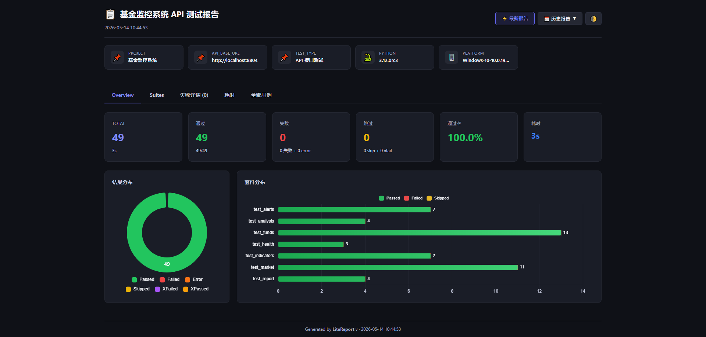
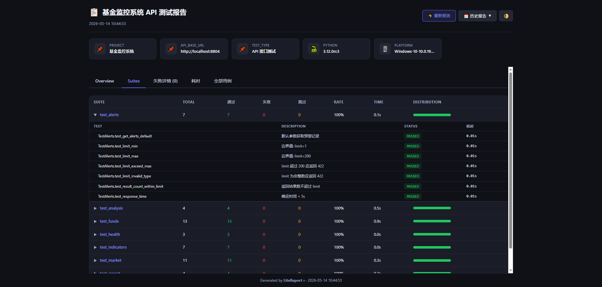
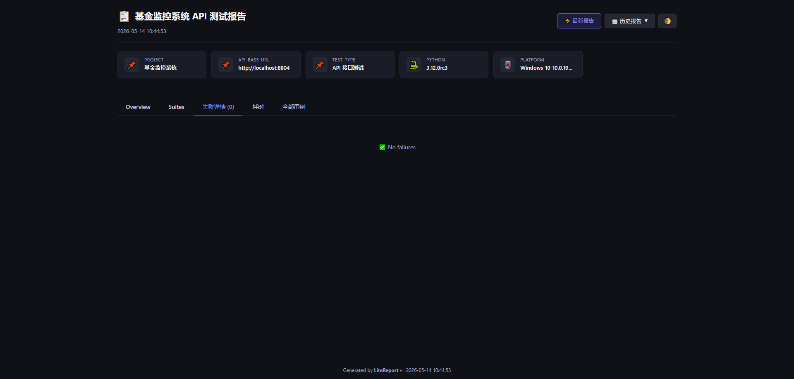
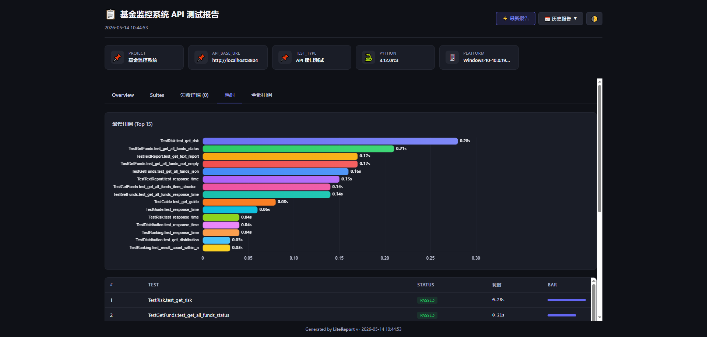
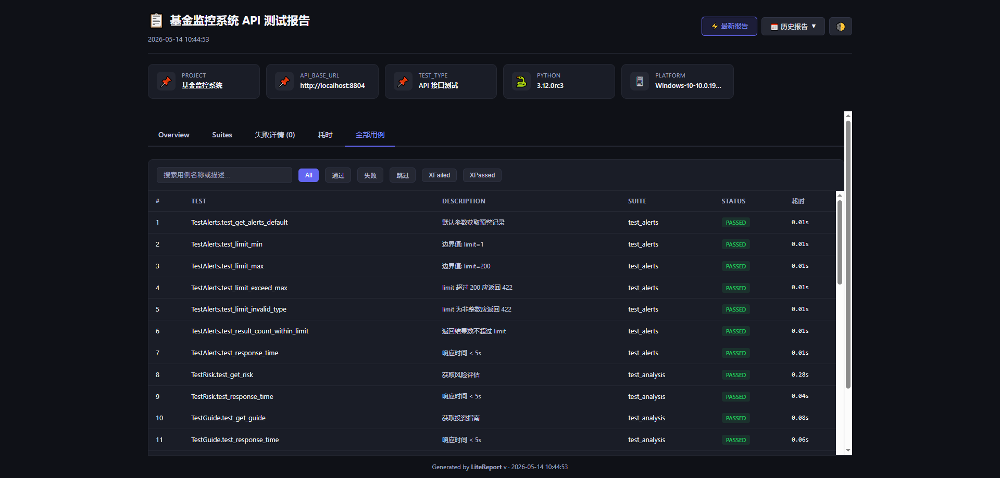

一行命令，一个 HTML 文件，零额外依赖。
如果你的团队在用 Python + pytest 做自动化测试，大概率遇到过这个问题：测试跑完了，然后呢？
终端里那一屏绿色的 PASSED 固然让人安心，但当你需要把测试结果同步给团队、归档到 CI/CD、或者回溯上周的测试状态时，纯文本输出就显得力不从心了。
于是你可能考虑过 Allure -- 业界最知名的测试报告框架。它确实强大，但用过之后你会发现：
allure-pytest 只负责采集数据，生成报告还需要单独安装 Allure CLI（通过 npm、brew 或手动下载）。allure generate 生成的是一个多文件目录，必须 allure open 启动 HTTP 服务才能查看。对于中小团队或个人项目来说，这些"重量"往往不值得。我们需要的不是一个"报告平台"，而是一个"报告工具" -- 轻量、快速、开箱即用。
项目地址：https://pypi.org/project/litereport/
git地址：https://github.com/moduwusuowei/litereport
LiteReport 是一个专为 pytest 生态设计的轻量级测试报告工具。它的核心理念用一句话概括：
零 JDK、单 HTML 文件、离线可用。
安装：
xxxxxxxxxxpip install pytest litereport[pytest]具体来说：
pip install 即装即用 -- 纯 Python 实现，不依赖 Java、Node.js 或任何外部二进制pytest --litereport 一键生成 -- 作为 pytest 插件，加一个参数就能自动生成报告lang: "zh" 或 lang: "en"，国际化团队友好| 维度 | Allure | LiteReport |
|---|---|---|
| 运行依赖 | JDK 8+ (版权问题) | Python 3.8+ |
| 安装方式 | pip + allure CLI (npm/brew) | pip install litereport |
| pytest 集成 | allure-pytest + allure generate 两步 | pytest --litereport 一步 |
| 报告查看 | 需 allure open 启动 HTTP 服务 | 双击 HTML 文件 |
| 报告体积 | 多文件目录（JS/CSS/JSON/HTML） | 单个 HTML 文件 |
| 离线使用 | 部分功能需 CDN 资源 | 完全自包含，断网可用 |
| CI/CD 产物 | 需 Allure 插件或额外配置 | 直接归档一个 HTML 文件 |
| 上手成本 | 高（JDK + CLI + 插件配置） | 低（一个 pip 命令） |
这不是说 Allure 不好 -- 它在大型企业级项目中有不可替代的优势（如与 TestOps 集成、自定义 step 等）。但如果你的需求是"跑完测试看个报告"，LiteReport 是更务实的选择。
版权问题：
JDK 11之后会带来版权问题，部分公司可能不会去采购，这是开发该工具的一个主要因素。
先看一个真实案例。我们有一个基金监控系统，后端用 FastAPI 构建，提供 12 个 API 端点（健康检查、基金列表、技术指标、预警记录、大盘行情、投资分析等）。围绕这些接口，我们用 pytest + LiteReport 搭建了自动化测试，项目结构如下：
api-test/├── conftest.py # 共享 fixture├── pytest.ini # pytest 配置├── litereport.yaml # LiteReport 配置├── requirements.txt # 依赖: requests, pytest├── gen_report.py # 独立报告生成脚本└── tests/├── test_health.py # 健康检查（3 条用例）├── test_funds.py # 基金接口（13 条用例）├── test_indicators.py # 技术指标（7 条用例）├── test_alerts.py # 预警记录（7 条用例）├── test_market.py # 大盘行情（7 条用例）├── test_analysis.py # 投资分析（7 条用例）└── test_report.py # 持仓报告（5 条用例）
核心是 conftest.py 中的 fixture 设计 -- 用 session 级别的 api_session 保持连接复用，并在测试开始前自动校验 API 可达性：
xxxxxxxxxx.fixture(scope="session")def api_session(base_url): """Shared requests Session with connectivity check.""" s = requests.Session() try: resp = s.get(f"{base_url}/health", timeout=5) assert resp.status_code == 200 except Exception as e: pytest.exit(f"API 服务不可达: {base_url} ({e})") yield s s.close()一条典型的测试用例长这样：
xxxxxxxxxxclass TestHealth: def test_health_check(self, api_session, base_url): """健康检查接口应返回 200""" resp = api_session.get(f"{base_url}/health") assert resp.status_code == 200运行非常简单：
xxxxxxxxxxpytest --litereport -vxxxxxxxxxx========= 49 passed in 3.42s =========报告已生成: reports/report.html
49 条测试用例全部通过，一个漂亮的 HTML 报告自动出现在 reports/ 目录下。这就是 LiteReport 在真实项目中的使用体验 -- 你不需要改变任何测试代码，只需要在 pytest 命令后加上 --litereport。
当然，上面这个 API 测试项目需要实际运行的后端服务，你无法直接复现。接下来我们用一个更简单的例子，让你在 5 分钟内亲自体验 LiteReport。
主页面：

Suits概览

失败用例：

耗时：

全部用例:

xmkdir calculator-test && cd calculator-testpython -m venv venv# Windowsvenv\Scripts\activate# macOS / Linuxsource venv/bin/activatepip install pytest litereport[pytest]创建 calculator.py：
xxxxxxxxxx"""简单的数学计算器模块"""def add(a, b): """加法""" return a + bdef subtract(a, b): """减法""" return a - bdef multiply(a, b): """乘法""" return a * bdef divide(a, b): """除法""" if b == 0: raise ValueError("除数不能为零") return a / b项目结构目标：
xxxxxxxxxxcalculator-test/├── calculator.py # 被测模块├── litereport.yaml # LiteReport 配置（可选）└── tests/├── conftest.py # 共享 fixture├── test_add.py # 加法测试套件├── test_subtract.py # 减法测试套件├── test_multiply.py # 乘法测试套件└── test_divide.py # 除法测试套件
注意这里的组织方式：每个文件对应一个测试套件（test suite），在 LiteReport 的报告中会按套件维度展示结果分布。
在写测试之前，先聊聊 test suite 怎么规划：
按功能模块拆分文件 -- 每个 test_xxx.py 文件就是一个 suite。LiteReport 自动识别文件名作为套件名，所以文件拆分直接影响报告的可读性。
用 class 对场景分组 -- 同一个功能的不同测试场景用 class 归类，比如 TestDivideBasic 和 TestDivideEdgeCases。
命名规范：
test_<模块>.pyTest<功能><场景>test_<具体行为>好的测试用例应该覆盖这几个维度：
| 维度 | 说明 | 示例 |
|---|---|---|
| docstring | 用中文写清楚"这条用例验证什么"，LiteReport 会提取并展示在报告中 | """整数除法""" |
| 正向测试 | 正常输入，验证正确输出 | assert add(1, 2) == 3 |
| 边界测试 | 零、负数、大数、浮点数等边界值 | assert add(0, 0) == 0 |
| 异常测试 | 非法输入应抛出预期异常 | pytest.raises(ValueError) |
| 参数化 | 多组数据复用同一逻辑，减少重复代码 | @pytest.mark.parametrize(...) |
下面是完整的测试代码。
tests/conftest.py -- 共享 fixture：
xxxxxxxxxx"""共享 fixture"""import sysimport os# 将项目根目录加入 sys.path，确保能 import calculatorsys.path.insert(0, os.path.join(os.path.dirname(__file__), ".."))tests/test_add.py -- 加法测试套件：
xxxxxxxxxx"""加法运算测试套件"""import pytestfrom calculator import addclass TestAddBasic: """基础加法测试""" def test_add_positive(self): """两个正整数相加""" assert add(1, 2) == 3 def test_add_negative(self): """两个负数相加""" assert add(-1, -2) == -3 def test_add_mixed(self): """正数加负数""" assert add(5, -3) == 2class TestAddEdgeCases: """加法边界测试""" def test_add_zero(self): """加零""" assert add(5, 0) == 5 def test_add_float(self): """浮点数相加""" assert add(0.1, 0.2) == pytest.approx(0.3) .mark.parametrize("a,b,expected", [ (100, 200, 300), (-100, 100, 0), (999999, 1, 1000000), ]) def test_add_parametrize(self, a, b, expected): """参数化测试：多组数据验证""" assert add(a, b) == expectedtests/test_subtract.py -- 减法测试套件：
xxxxxxxxxx"""减法运算测试套件"""import pytestfrom calculator import subtractclass TestSubtract: """减法测试""" def test_subtract_positive(self): """正整数相减""" assert subtract(5, 3) == 2 def test_subtract_result_negative(self): """结果为负数""" assert subtract(3, 5) == -2 def test_subtract_zero(self): """减零""" assert subtract(5, 0) == 5 def test_subtract_self(self): """自身相减等于零""" assert subtract(42, 42) == 0 .mark.parametrize("a,b,expected", [ (100, 50, 50), (-10, -3, -7), (0, 0, 0), ]) def test_subtract_parametrize(self, a, b, expected): """参数化测试""" assert subtract(a, b) == expectedtests/test_multiply.py -- 乘法测试套件：
xxxxxxxxxx"""乘法运算测试套件"""import pytestfrom calculator import multiplyclass TestMultiply: """乘法测试""" def test_multiply_positive(self): """正整数相乘""" assert multiply(3, 4) == 12 def test_multiply_negative(self): """负数相乘""" assert multiply(-3, -4) == 12 def test_multiply_mixed_sign(self): """正负相乘""" assert multiply(3, -4) == -12 def test_multiply_by_zero(self): """乘以零""" assert multiply(100, 0) == 0 def test_multiply_by_one(self): """乘以一""" assert multiply(42, 1) == 42 .mark.parametrize("a,b,expected", [ (0.5, 4, 2.0), (10, 10, 100), (-1, -1, 1), ]) def test_multiply_parametrize(self, a, b, expected): """参数化测试""" assert multiply(a, b) == expectedtests/test_divide.py -- 除法测试套件（重点展示异常测试）：
xxxxxxxxxx"""除法运算测试套件"""import pytestfrom calculator import divideclass TestDivideBasic: """基础除法测试""" def test_divide_integers(self): """整数除法""" assert divide(10, 2) == 5.0 def test_divide_float_result(self): """结果为浮点数""" assert divide(7, 2) == 3.5 def test_divide_negative(self): """负数除法""" assert divide(-10, 2) == -5.0class TestDivideEdgeCases: """除法边界与异常测试""" def test_divide_by_zero(self): """除数为零应抛出 ValueError""" with pytest.raises(ValueError, match="除数不能为零"): divide(10, 0) def test_divide_zero_numerator(self): """被除数为零""" assert divide(0, 5) == 0.0 def test_divide_by_one(self): """除以一""" assert divide(42, 1) == 42.0 .mark.parametrize("a,b,expected", [ (100, 3, 33.333333), (1, 7, 0.142857), (22, 7, 3.142857), ]) def test_divide_precision(self, a, b, expected): """浮点精度验证""" assert divide(a, b) == pytest.approx(expected, rel=1e-4)创建 litereport.yaml：
xxxxxxxxxxreport title"Calculator 测试报告" theme"light" lang"zh"history enabledtrue max_entries30output dir"./reports" filename"report.html"environment project"calculator-test" test_type"单元测试"不创建配置文件也能运行，全部使用内置默认值。配置文件的作用是自定义报告标题、主题、语言等。
xxxxxxxxxxpytest --litereport -v终端输出类似：
xxxxxxxxxxtests/test_add.py::TestAddBasic::test_add_positive PASSEDtests/test_add.py::TestAddBasic::test_add_negative PASSEDtests/test_add.py::TestAddBasic::test_add_mixed PASSEDtests/test_add.py::TestAddEdgeCases::test_add_zero PASSEDtests/test_add.py::TestAddEdgeCases::test_add_float PASSEDtests/test_add.py::TestAddEdgeCases::test_add_parametrize[100-200-300] PASSEDtests/test_add.py::TestAddEdgeCases::test_add_parametrize[-100-100-0] PASSEDtests/test_add.py::TestAddEdgeCases::test_add_parametrize[999999-1-1000000] PASSED...tests/test_divide.py::TestDivideEdgeCases::test_divide_by_zero PASSEDtests/test_divide.py::TestDivideEdgeCases::test_divide_precision[100-3-33.333333] PASSED...========= 30 passed in 0.15s =========
打开 reports/report.html，你会看到一个完整的测试报告。
生成的报告不是简单的文本罗列，而是一个功能完整的单页应用：
概览仪表盘：页面顶部展示整体统计 -- 总用例数、通过数、失败数、跳过数，以及一个环形图直观展示结果分布（每个状态都有对应数字标注）。
套件维度分析：水平堆叠柱状图，按测试文件（suite）维度展示每个文件的通过/失败/跳过分布。在我们的例子中，你会看到 test_add、test_subtract、test_multiply、test_divide 四个套件各自的执行状况。
最慢用例排行：水平条形图展示耗时 Top N 的测试用例，帮助快速定位性能瓶颈。
详情展开：点击任意套件行，展开查看该套件下每条用例的执行结果、耗时、docstring 描述。这也是为什么前面强调 docstring 要写好 -- 它会直接出现在报告中。
搜索与过滤：支持全文搜索测试名称，快速定位特定用例。
明暗主题切换：报告右上角的主题开关，支持 Light / Dark 两种模式，切换后自动记忆偏好。
环境信息：报告底部展示 litereport.yaml 中配置的 environment 字段，如项目名、测试类型等。
LiteReport 的配置有四个层级，优先级从高到低：
xxxxxxxxxxCLI 参数 > litereport.yaml (项目) > ~/.litereport/config.yaml (全局) > 内置默认值
比如你想临时改标题，不用修改配置文件：
xxxxxxxxxxpytest --litereport --litereport-title="Nightly Build Report"在 litereport.yaml 中开启历史功能：
xxxxxxxxxxhistory enabledtrue max_entries30开启后，每次运行 pytest --litereport 都会在 reports/history/ 目录保存一份快照。打开报告后，可以在界面中浏览历史记录，对比不同时间点的测试状态。
在 CI/CD 场景中，你可能希望"先跑测试，再生成报告"分两步执行。LiteReport 支持这种模式：
xxxxxxxxxxfrom litereport import ReportData, ReportGenerator, LiteReportConfig# 加载 pytest --litereport 产出的 JSON 数据config = LiteReportConfig.load("litereport.yaml")with open("reports/report_data.json", "r", encoding="utf-8") as f: data = ReportData.from_json(f.read())# 生成报告gen = ReportGenerator(config)gen.generate(data, "reports/report.html")pytest --litereport 运行后除了生成 HTML 报告，还会保存一份 report_data.json 原始数据。你可以基于这份数据用 Python API 重新生成报告，或者做二次处理。
虽然 --litereport 插件是最便捷的方式，但 LiteReport 也支持从其他数据源生成报告：
xxxxxxxxxx# 从 JUnit XML 生成（兼容 Jenkins、GitLab CI 等产出格式）litereport generate junit-results.xml# 从 LiteReport JSON 格式生成litereport generate report_data.json# 初始化配置文件litereport initxxxxxxxxxxpip install litereport[pytest]pytest --litereport两行命令，打开 reports/report.html，你的第一份 LiteReport 测试报告就生成了。
LiteReport 是开源项目，欢迎贡献代码和反馈意见。
期待您的star~~~